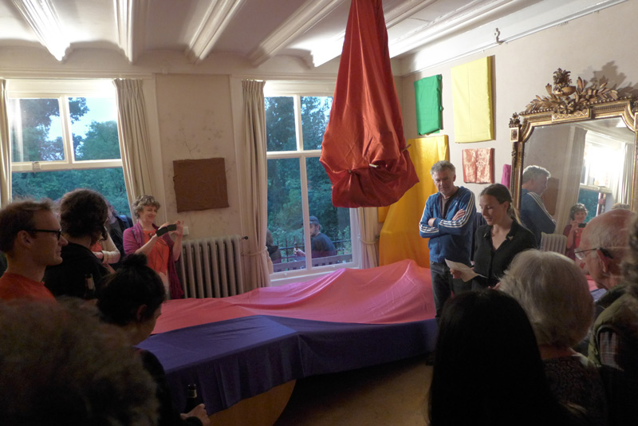

14.06.2015
Lola Bezemer
The following are unedited fieldnotes that Jip van Steenis has written during the opening event for Lola Bezemer. Fieldnotes are a method of description cultural anthropologists use to describe things that occurre while observing a phenomena. These fieldnotes are accompanied by photos taken of the environment of the event.
The following are unedited snapshots that Polarlicht photographed during the opening for Lola Bezemer. These snapshots are meant to illustrate the event from a one person perspective, capturing personal moments of interest as well as capturing the atmosfeer of the event.
21:00
Almost all the people are early. They enter the Vondelparkhuis with a “wow”. Lola wrapped all the furniture and paintings of Tirza’s parents in coloured cloths.
21:05
Lola called the wrapping “inside-out Christo” to someone, but maybe this is a reference she doesn’t necessarily want to stick to the work.
21:07
Her mom recognises the cloths. Half them are hers. I recognise the cloths on the living room chairs, they’re always there.
21:10
21:11
21:12
Toekie the cat found her spot in all the wrapping. Her chill cushion is now a blue acrylic hutch.
21:14
People look funny to me within all the colours. They look so grey within this setting. There is one guy who wears a bright red sweater and a man with a bright blue Adidas vest. They do match the colours. The guy with the blue Adidas vest shares the feeling though that he might be disturbing the whole.
21:14
21:15
21:18
21:19
21:20
21:21

21:26
The living room looks smaller then last week with Elke, when people searched a sitting spot. Now they have no choice but to take a place amidst the clothed furniture.
21:27
Host Tirza welcomes us. She shares us two sentences to welcome us to this Home Alone: “Friday I was at this opening and I made a note that says: always approach the event from the side. The next day I was on my bike and spoke into my voice tracer: why let a stranger stick a finger into your eye”.
21:27
21:28
In the cramped crowed, host Marek starts a talk with Lola. They had a small talk last week on the work, which they continue here now. Marek says it is unfamiliar and strange to him. It looks staged for him to talk with Lola like this. But they just start of anyways. He asks her how she started working.
21:30
Lola really wanted to take the place like the place is, but still change it. She started wrapping one thing, and then just finished it all.
21:31
It took her six days to finish the wrapping.
21:32
21:33
She says she’s visited Tirza’s parents house before. She liked the house, with all the small objects and many paintings, but she was annoyed that everything in the room was so visible and specific.
21:34
One of the painters of the covered paintings on the wall is visiting the exhibition. The painter likes it better like this. There is “harmony”.
21:35
Some stuff isn’t wrapped. The visitors start to ask critical questions on it. The heating is still out in the open. For Lola it stayed unwrapped because the architect designed it as part of the house.
21:37
One girl asks if there was a criteria for the colour. Lola says no. There was only a rule that the same colours could not be next to each other. It needed to be a colour composition.
21:38
Her mother asks Lola why she didn’t wrap herself in some colourful composition.
21:39
A girl asks why we still call the covered paintings ‘paintings’. Lola says it’s a good question. The girl says she’s not defining the stuff by what is under it. For her the whole lot is an action. It’s not about the individual objects that are covered.
21:41
Lola says there are also “combined wrappings”. There is for example something, a light on the ceiling?, which is together wrapped with a, cupboad?
21:43
Marek asks if the action is finished. Some visitor just put his beer down on the floor, Marek asks if she has to urge to wrap the beer. No, the action is finished.
21:45
A guy suggests the work would be nice if also the curtains in front of the windows were closed.
21:48
A girl says it looks like the covering you do against dust, when you leave for a long holiday.
21:50
RMarek points out a covered painting. He calls it the “skirt”. For him it gave an entrance to talk about the work. Marek knows that behind the “skirt” is a work of Joseph Beuys. Marek formulated some Freudian jokes on it, but doesn’t share them with us.
21:52
A man says some in the audience don’t know what’s underneath all the coverings.
21:55
A guy asks if Lola would like to continue wrapping. Marek asks if the man is offering his house. The man says he’ll soon be on holiday for three and a half week, why not. Lola says she might not has the urge to wrap stuff within a different house. Another man says the wrapping gives inspiration to refurnish the house.
21:57
Marek ends with a note. He says we are not mentioning a strong reference to particular art works in art history, should we still mention it? Lola answers with a no.
22:01
A guy mentions the objects are not only wrapped, but that the cloth is also draped. He points particular stuff out. “This painting is draped, that one is wrapped”. Lola says some objects needed the one action, others the other.
22:03
Marek asks us what we are all questioning. Are we trying to figure out what the criteria of Lola’s creation is? A man answers that it’s just nice to think about it, the stuff that Lola did.
22:03
22:05
Lola thinks we should stop, it’s getting to long. Marek says there is rumours that there is 1€ beers in the kitchen, “please take a look for yourself”.
22:08
22:08
22:16
A guy, Martin, calling himself Chalk Margin, started tuning his guitar. He asks Lola if he can use “the black thing”, a covered stool to use to play on. He puts it in front of the mirror.
22:23
Chalk softly starts playing his guitar. People finish their chatting, and gather around him. He starts singing a song: “What’s the colour of your sweater? Is it true or is it lie? What’s the colour of your sweater? Is it joy or is it pain? What’s the colour of your sweater? Is it blindness or hostility?...”.
22:23
22:24

22:30
That was his song. People clap and he leaves the black thing again. In the meantime, outside the light shifted to dark. The lamps that Lola installed to light her work show theatrically now.
22:46
The brother of Lola repeats to me what Lola thought of the house, to busy. The brother says he thinks the room is still really busy with all the colours.
23:20
Officially the event ended. People stick around this Sunday night. They feel comfortable enough to finally put their beer bottles on the fabric covered tables.
19:25
When I want to walk away, my eye catches a stack of books on a table in the corner. They are Elke’s. Among them are comic books, and books in Ethiopian language. These are the languages she has been reading to make it work.
Fieldnotes by Jip van Steenis
Photos by Polarlicht